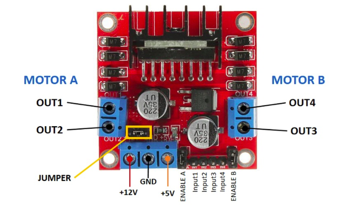

Introduction
The L298 is a high voltage, high current dual full-bridge motor driver designed to drive DC and stepping motors. It can control the direction and speed of two DC motors. The ai of this document is to provide a detailed guide for the L298 motor driver, suitable for beginners.
1. What is a Motor Driver?
A motor driver is like a translator between a tiny computer signal (like from an Arduino) and a big motor that needs lots of power. It helps the small signal from the computer control the motor properly by giving it the right amount of power it needs.
2. Overview of L298 Motor Driver
The L298 motor driver is an integrated circuit (IC) used to control motors in various projects. It is capable of driving two DC motors or one stepper motor and is often used in robotics and other automated systems.
Key Features
- Dual H-Bridge Motor Driver
- Can drive two DC motors or one stepper motor
- Maximum operating voltage: 46V
- Maximum output current: 2A per channel
- Thermal shutdown and high-temperature protection
- Control logic voltage: 5V
3. Pin Configuration
The L298 motor driver IC comes in a 15-lead Multiwatt package. Here is the pin configuration:
Pins Description
- Current Sense A (1, 15): Sense resistor pins for motor A.
- Enable A (2): Enables the H-bridge for motor A.
- Input 1 (3): Logic input for H-bridge (motor A).
- Input 2 (4): Logic input for H-bridge (motor A).
- Output 1 (5): H-bridge output (motor A).
- Ground (6, 7, 11, 12): Ground connections.
- Output 2 (8): H-bridge output (motor A).
- V_s (9): Supply voltage for the motors.
- Vss (10): Supply voltage for the logic inputs.
- Output 3 (13): H-bridge output (motor B).
- Output 4 (14): H-bridge output (motor B).
- Input 3 (15): Logic input for H-bridge (motor B).
- Input 4 (16): Logic input for H-bridge (motor B).
- Enable B (17): Enables the H-bridge for motor B.
- Current Sense B (18, 19): Sense resistor pins for motor B.
4. Working Principle
The L298 motor driver works based on the H-bridge concept, which allows a voltage to be applied across a load in either direction. By using two H-bridges, the L298 can control the speed and direction of two DC motors independently.
Controlling Motor Speed and Direction
- Direction Control: Controlled by the state of the input pins (IN1, IN2 for motor A; IN3, IN4 for motor B).
- Speed Control: Controlled by applying a PWM signal to the enable pins (ENA for motor A; ENB for motor B).
Truth Table for Motor Control
| EN | IN1 | IN2 | Motor Operation |
|---|---|---|---|
| 0 | X | X | Motor Stopped |
| 1 | 0 | 0 | Motor Stopped |
| 1 | 1 | 0 | Motor Rotates CW |
| 1 | 0 | 1 | Motor Rotates CCW |
| 1 | 1 | 1 | Motor Stopped |
5. Wiring and Connections
To use the L298 motor driver with a microcontroller like Arduino, follow these steps:
Components Needed
- L298 Motor Driver Module
- Arduino Board
- DC Motors
- Power Supply (for motors)
- Connecting Wires
Wiring Diagram
Example for controlling one DC motor:
- Connect EN1 to a PWM pin on the Arduino (e.g., pin 9).
- Connect IN1 to a digital pin on the Arduino (e.g., pin 8).
- Connect IN2 to a digital pin on the Arduino (e.g., pin 7).
- Connect OUT1 and OUT2 to the two terminals of the DC motor.
- Connect Vss to the 5V pin on the Arduino.
- Connect GND to the ground pin on the Arduino.
- Connect Vs to the positive terminal of the external power supply.
- Connect the negative terminal of the external power supply to GND.
Example Schematic:
Arduino L298
-----------------------
GND -> GND
5V -> Vss
Pin 9 -> ENA
Pin 8 -> IN1
Pin 7 -> IN2
-> OUT1 -> Motor Terminal 1
-> OUT2 -> Motor Terminal 2
External -> Vs
Power
Supply -> GND
6. Example Applications
Robotics
- Controlling the movement of robot wheels.
- Controlling the position of robotic arms.
Home Automation
- Controlling the opening and closing of curtains.
- Controlling conveyor belts in automated systems.
Industrial Automation
- Controlling motors in conveyor systems.
- Driving motors in automated machinery.
7. Code Examples for Arduino
Basic Example to Control a DC Motor
const int ENA = 9;
const int IN1 = 8;
const int IN2 = 7;
void setup() {
pinMode(ENA, OUTPUT);
pinMode(IN1, OUTPUT);
pinMode(IN2, OUTPUT);
}
void loop() {
// Motor rotates clockwise
digitalWrite(IN1, HIGH);
digitalWrite(IN2, LOW);
analogWrite(ENA, 255); // Full speed
delay(2000); // Run for 2 seconds
// Motor rotates counterclockwise
digitalWrite(IN1, LOW);
digitalWrite(IN2, HIGH);
analogWrite(ENA, 255); // Full speed
delay(2000); // Run for 2 seconds
// Motor stops
digitalWrite(IN1, LOW);
digitalWrite(IN2, LOW);
analogWrite(ENA, 0); // Stop the motor
delay(2000); // Stop for 2 seconds
}
8. Troubleshooting
Common Issues
- Motor not running: Check power connections and ensure the motor is properly connected.
- Motor running in one direction only: Verify the logic inputs and ensure they are correctly set.
- Overheating: Ensure the L298 is not overloaded and use a heat sink if necessary.
- No response from motor: Check the enable pins and ensure they are properly configured.